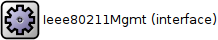
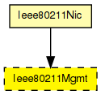
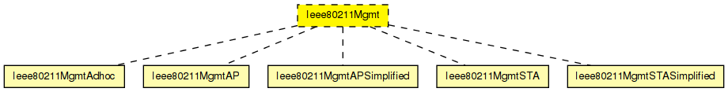

This is not a concrete module type, but a prototype for all IEEE 802.11 management module types. It exists to specify what gates a management module should have in order to be usable within Ieee80211Nic.
The following diagram shows usage relationships between types. Unresolved types are missing from the diagram.
The following diagram shows inheritance relationships for this type. Unresolved types are missing from the diagram.
| Name | Type | Description |
|---|---|---|
| Ieee80211Nic | compound module |
This NIC implements an 802.11 network interface card. It can be configured via the mgmtType parameter to act as an AP or a STA, or for ad-hoc mode. |
| Name | Value | Description |
|---|---|---|
| display | i=block/cogwheel |
// // This is not a concrete module type, but a prototype for all IEEE 802.11 // management module types. It exists to specify what gates a management // module should have in order to be usable within Ieee80211Nic. // moduleinterface Ieee80211Mgmt { parameters: @display("i=block/cogwheel"); gates: input uppergateIn; output uppergateOut; input macIn @labels(Ieee80211Frame); output macOut @labels(Ieee80211Frame); }